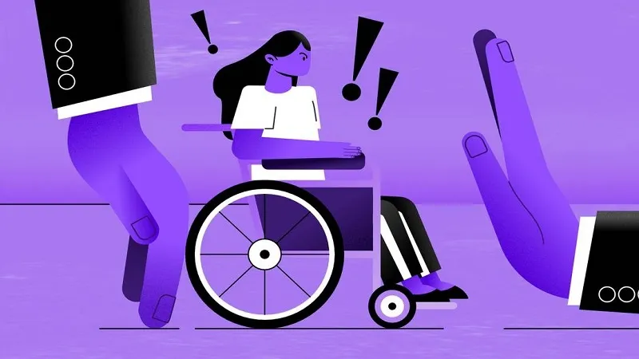

O movimento de orgulho autista está inserido em uma perspectiva
**neurodiversa**, onde o cérebro humano é entendido como naturalmente
variado. O autismo, dentro disso, é uma expressão legítima dessa
diversidade. O orgulho autista busca:

Combater o capacitismo (preconceito contra pessoas com
deficiência).
Promover autonomia, autoaceitação e visibilidade.
Mudar a forma como a sociedade enxerga o autismo: de transtorno
para diferença.